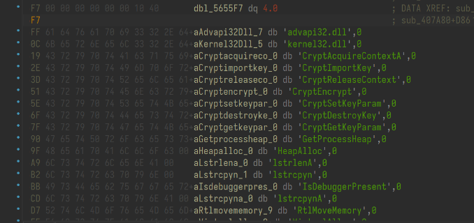

感觉第一周最好玩，没了。
聪明的信使
九位凯撒。
flag{Y0u_KnOw_Crypt0_14_v3ry_Imp0rt@nt!}
给阿姨倒一杯卡布奇诺
代码没去符号，一切都很明显，不多赘述
加密是魔改 xxtea。魔改了三处，其中还涉及一个全局变量
1 | from ctypes import * |
何须相思煮余年
数据开头是 0x55，结尾是 0xc3，可认为是汇编机器码
转化为 hex 数据后 ida 查看（注意这里如果复制到 010editor 后使用 paste from hex text 会吞一些数据。）
直接解即可。
b’XYCTF{5b3e07567a9034d06851475481507a75}’
今夕是何年
ida 和 die 都认为是未知架构。搜索架构码 or 搜索 cpu 特征可知可能是龙芯架构。
配置 qemu 环境模拟执行
馒头
1 | tree = [0x8DE, 0x395, 0x1BE, 0x0D9, 0x06A, 0x033, 0x014, 0x00F, 0x011, |
喵喵喵的 flag 碎了一地
推理游戏
同个函数有不被解析的部分
你是真的大学生吗？
汇编阅读。
相邻两位依次异或
1 | cipher = [0x76, 0x0E, 0x77, 0x14, 0x60, 0x06, 0x7D, 0x04, 0x6B, 0x1E, |
输出会有一位偏移，修复一下即可。
xyctf{you_know_8086}
砸核桃
NsPack，esp 定律或者附加下断点脱壳
esp：
pushad 后对 esp 的地址下硬件访问断点，待到 popad 或代码到 0x401000+后使用 dump 插件 dump 并调整
最后发现是一个异或
1 | key = b"this_is_not_flag" |
babyUnity
该题可直接用 il2cppdumper 脱
脱完后建议直接用 dnspy 分析 assembly，可看见几个函数的偏移
在 ida 里直接 ctrl+g 飞过去，可看得函数逻辑（有些是空函数，空就别管）
1 | import base64 |
XYCTF{389f6900-e12d-4c54-a85d-64a54af9f84c}
DebugMe
JEB 打开，程序被 vm 混淆
MainActivity 里有暴露 cipher 数组，程序无输入，点击按键后默认只弹出无用信息，同时相邻部分的另一个 Toast 弹出有和 cipher 有关的参数。可推测需通过调试篡改到弹出 flag 的逻辑。
追踪调用：
分析 What 类或 x 的交叉引用树，可知该类是做了 tea 加解密类。x 调用了解密算法
key 的初始化：
tea 算法特征：
除此之外还进行了 base64 和稍微的变形,並修复了 cipher 的 base64 格式（有一个 url 格式的%2b 需替换为+）
这里我静态不知为何解不出，那么尝试用 frida 动态解。
frida 脚本思路是：hook 一个被执行的函数，篡改为 What.x 解密函数并使用修复后的密文作为参数。最终选择 hook 了 Debug 的 check 函数
1 | // 检查java runtime可用性 |
easy language
搜字符串容易判断是 aes ecb 加密，但 key 很难找，且没有 aes 常量暴露
但是，又发现有 CryptoAPI 的字样

猜测是动态注册调用，尝试 hook
确实使用了，但是 key 试了 RUUU 和 KSSM 都不对
但是又看到底下的 xyctf 和 abctf，长度刚好 16 位，满足 aeskey 的要求
尝试：
1 | from Crypto.Cipher import AES |
XYCTF{y0u_@r3_v3ry_g00d_a7_E_l@ngu@ge}
ez_enc
本题的其它计算都不算重要，重要的是 mod 20.
加密带有 mod 20，会丢失信息，因此不能单纯逆推。
而事实上，mod 20 不仅是一个解题限制，更是解题线索.一个可见字符的大小范围是 0x20-0x7e。而当中 mod 20，同一个数字约有 5-6 种的可能。
同时加密算法中，flag[i]同时受 flag[i]自己和 flag[i+1]影响，也就是受前一位解密的影响。
也就是说我们从最后一位往前推，每一位都有约 5 种可能，而每一位都是上一位推理的继续。那么事实上，这个就是以 flag 最后一位为根节点，以 mod 20 为运算推理出的一个树，某一条能走到树最后一层的路径就是最终的 flag。
那么解题的关键找到了。剩下的就是让解题变为可行，这里分析题目有几个约束可用：
①flag[i]和 flag[i+1]强相关，如何 flag[i+1]，也就是上一位的值不对，那 flag[i]大概率也不对
②flag[i]正确的情况为：flag[i]在推理时小于 20（这里的 flag[i]是由 flag[i+1]推出的 flag[i]%20）且 flag[i]推理完毕后>=0x20,<=0x7e
那么写一个递归算法实现这个思路：
1 | cipher = bytes.fromhex( |
ezcube
魔方，约束右手公式和 12 步
在网上搜到了同款初始情况：
魔方入门解法第 7 步：调整顶层棱块位置 - 爱魔方 (i-mofang.com)
ezmath
我认为出得很差的一个题。
python 3.8 打包为 exe，使用 python3.8 环境下的 pyinstxtractor.py 解包，使用 uncompyle6 反编译。
1 | flag = [ord(i) for i in input('flag:')] |
简单格式处理后如下：
flag 长 32 位，
sum = 0
for i in range(32):
sum += flag[i]_ flag[i]
sum += flag[i]_ （100-300 的一个偶数）
sum = -297412
可能按照出题人的想法，这题的解法是依据题目简介的提示：初中数学，配平。
A^2 + 2AB +B^2 = X。这题每一位 flag 都有平方，也都有乘以一个偶数，那假设每位 flag 是 A，A 乘的那个偶数就是另外的 2B，由此可以推出 flag
那这不是很扯吗，题目的解是基于一个很低级的假设。大伙是来做逆向的，不是脑洞数学。
ezrand
随机种子随机数算法，因为随机种子根据 time64 得到，而 time64 返回值落在 0xffff 内，所以可爆。
中间随机数相关的复杂算法 ida 可能还原不正确，需要按汇编理解。本质上是 rand()%0xff
1 |
|
ezUnity
此题略微难在 metadata 文件格式修复
可对比 babyUnity 或者其它 Unity 文件的 dll，修复后：
剩下操作类似 babyUnity
能通过 findcrypt 或者分析发现是 aes
1 | cipher1 = "pNufkEIU9dHjKXYXWiFyrthHYFEfqJAWcPM/t8/zX1w=" |
XYCTF{IL2CPP_1s_intere5t1ng}
Trustme
main 是一个没什么用的 rc4，并且和程序对不上。
康康别的类
有一个对 dex 解密并输出什么的。这里静态解太麻烦了，动态找到安卓机的 data/data 里对应的包，发现确实有东西
如：
分析 dex 目录的 apk，发现其主要做了一个数据库查找操作。
找到数据库：
XYCTF{And0r1d_15_V3ryEasy}
That’s this
lua 字节码
在线反编译
https://www.luatool.cn/index.php
1 |
|
存在一些混淆代码，但从密文逆推可以很轻松地找到核心逻辑：
1 | import base64 |
XYCTF{5dcbaed781363fbfb7d8647c1aee6c}